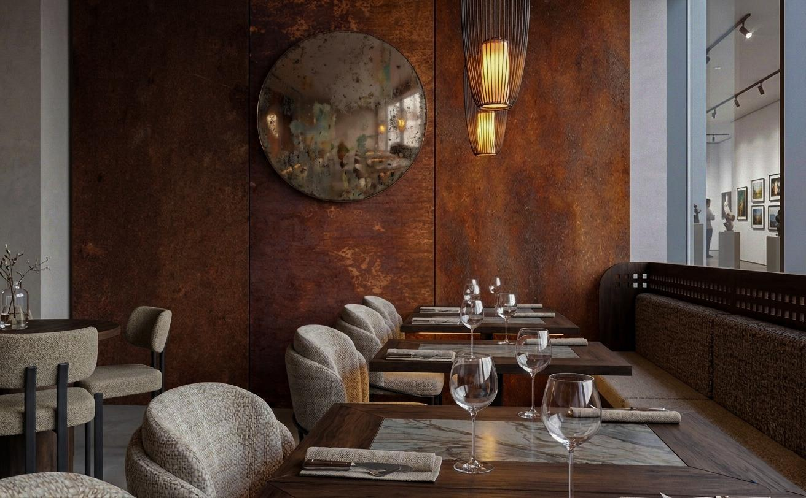

Podziel się gustami
Selekcja rzemieślniczych serów i wędlin, ubijane masło z ’ndują, konfitura morelowa ze szczyptą chili, piklowane warzywa i oliwki, nasze paluchy.
KRAKÓW / GALICYJSKA 10
RESTAURACJA NA TWÓJ GUSTNa lunch. Na kawę. Na cały wieczór.
Rozgość się po swojemu.
Każdy ma swój gust.
Tu jest na niego miejsce.
Lunch między zakupami. Kawa z przyjaciółką. Kolacja, która trochę się przedłuża. GUSTA jest na takie okazje. I na te zupełnie bez okazji.
Wpadnij tak, jak lubisz
KORTEN. DREWNO. DOBRY KLIMAT.02 / MASZ GUST. MASZ WYBÓR.
Nie musimy mieć takich samych gustów. Pizza z Twoimi dodatkami? Makaron z ulubionym sosem? U nas wybór należy do Ciebie.
Cała karta. Cały wybór. ↗Korten, drewno i miękkie światło.
Wybierz kadr. Rozejrzyj się.
Wizualizacje architektoniczne restauracji GUSTA.
PODOBA MI SIĘ.
ME GUSTA.
DOBRE JEDZENIE. DOBRE MIEJSCE. TWOJE GUSTA.05 / WIDZIMY SIĘ PRZY STOLE
Designer Outlet Kraków
ul. Galicyjska 10, Kraków
Poniedziałek–niedziela